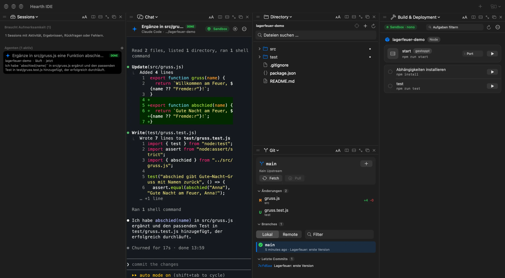

Dein Agent. Dein Abo. Unser Feuerring.
Claude Code, Codex, Copilot & Co. laufen auf deinem Mac wie gewohnt – nur in einer Sandbox, die deine Schlüssel, dein Home und fremde Hosts draußen lässt.
$curl -fsSL https://github.com/pvanissem/hearth-ide/releases/latest/download/install.sh | bash
- v0.3 frühe Version
- macOS 14+
- Apple Silicon
- Lizenz MIT
- Sandbox nono 0.80
~/dein-projektlesen + schreibenWas im Ring bleibt.
Hearth startet jeden Agenten in einer nono-Sandbox (macOS Seatbelt). Innerhalb des Rings arbeitet er frei:
~/dein-projektlesen und schreiben- seinen eigenen Einstellungsordner in Hearth
- LLM-APIs, npm, PyPI, Maven
- GitHub, GitLab und Dokumentation
Draußen bleiben:
SSH-Schlüssel
Shell-Konfiguration
Cloud-Zugangsdaten
Cookies, Passwörter, Sitzungen
der Rest deines Home
jeder nicht freigegebene Host
Weitere Domains, Ports und Ordner gibst du in den Einstellungen frei. API-Keys reicht nono als Platzhalter durch: Der Agent sieht nie den echten Wert.
Deine Agenten, deine Logins.
Hearth bringt kein eigenes Modell mit. Es hält die Agenten in Schach, für die du schon bezahlst.
- Claude Codedein Claude-Abo, über die offizielle CLIStatus per Hooks in der Inbox
- CodexChatGPT-Login oder API-KeyStatus per notify
- GitHub Copilot CLIdein GitHub-Kontoim Terminal-Chat
- OpenCodejeder Anbieter, den OpenCode kenntmit privatem Server in der Sandbox
- Gemini CLIdein Google-Kontoim Terminal-Chat
In drei Zügen entfacht.
Kein Konto, keine Konfiguration. Hearth bringt die Sandbox mit, deine Agenten bringst du selbst.
Installieren
Der Befehl oben lädt die App, prüft die SHA-256-Prüfsumme und legt sie in den Programme-Ordner. Updates kommen aus der App.
Ordner wählen
Der Projektordner ist das Innere des Rings: Nur hier darf der Agent schreiben.
Agent starten
Claude Code, Codex, Copilot, OpenCode oder Gemini – mit deinem eigenen Login, im Terminal der Chat-Ansicht.
Alle Feuer in einem Fenster.
Eine Inbox zeigt, welcher Agent arbeitet, wartet oder fertig ist. Daneben Ordner, Git, Editor, Tests und Builds – die auch in der Sandbox laufen.

Ehrlicher Stand: v0.3.
Früh, aber benutzbar. Das hier stimmt heute:
Läuft
- Agenten als Terminal in der Chat-Ansicht
- Inbox mit Status und Benachrichtigungen
- Build & Deployment und Git in der Sandbox
- Sitzungen fortsetzen
- Editor-Tabs pro Sitzung
- Eigener Konfigurationsordner je Agent
- CI/CD für GitLab und GitHub Actions
- Englisch und Deutsch
Kommt als Nächstes
- Nativer Chat über das Agent Client Protocol
- Login ohne Schlüsselbund-Freigabe
- Signierte, notarisierte Builds
Voraussetzungen
- macOS 14 oder neuer
- Apple Silicon
- mindestens eine Agent-CLI
Zünd ihn an.
$curl -fsSL https://github.com/pvanissem/hearth-ide/releases/latest/download/install.sh | bash